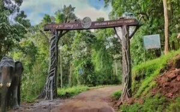
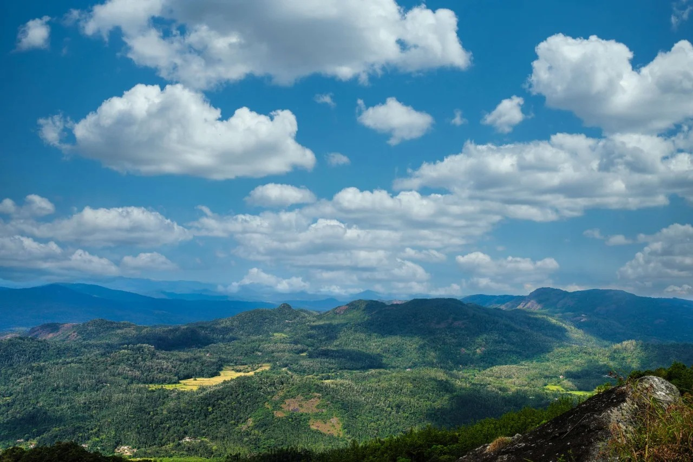
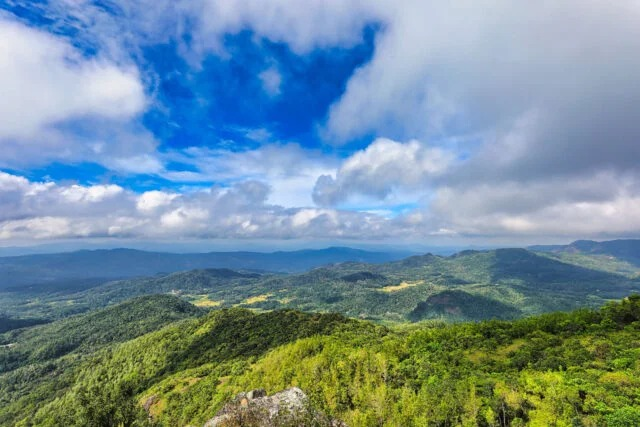
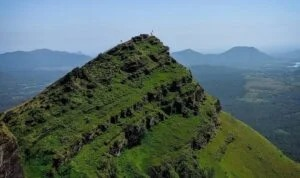
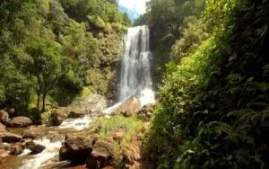
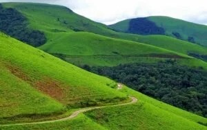

Datta Peeta / Baba Budangiri
A scenic hill route loved for viewpoints, clouds and cool weather.
Chikmagalur sightseeing
Stay close to coffee country and plan day trips to popular Chikmagalur attractions. Route support, trekking and jeep drives can be discussed while booking.
Popular nearby places
Distances can vary by selected road and weather. Confirm the best route with the homestay before starting.
A scenic hill route loved for viewpoints, clouds and cool weather.

Popular waterfall experience that suits nature-focused day plans.

Green hills, viewpoints and relaxed scenic drives from Chikmagalur.

Good option for guests interested in forest routes and wildlife areas.

One of the most loved Chikmagalur hill routes for wide mountain views.

Enjoy plantation roads, misty views and quiet routes towards Hirekolale Lake.
Places to visit
Use this as a quick guide while planning. Trek routes, waterfall access and forest timings should be checked before travel.
Route support
Hill and waterfall routes can change with weather, road work, forest rules and timing restrictions. The homestay can help you choose a realistic plan for your group and travel day.


